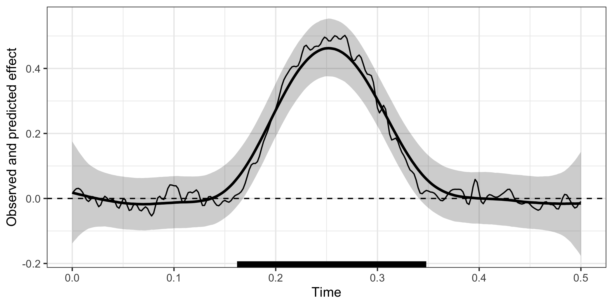
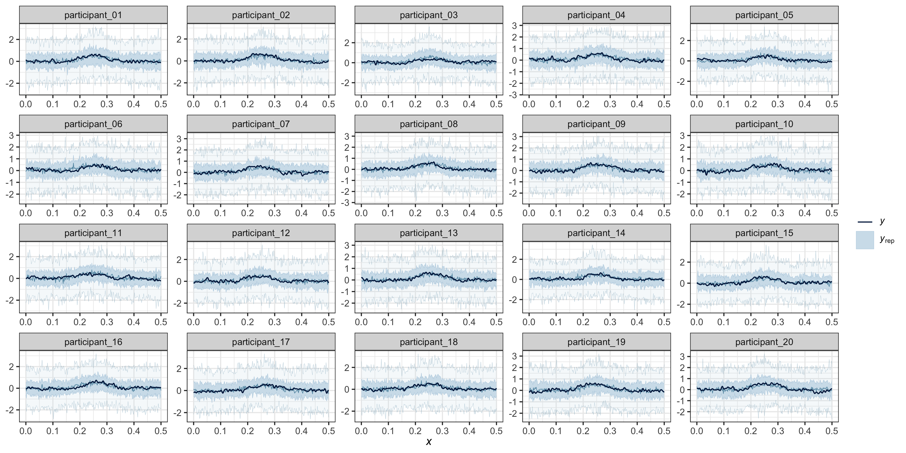
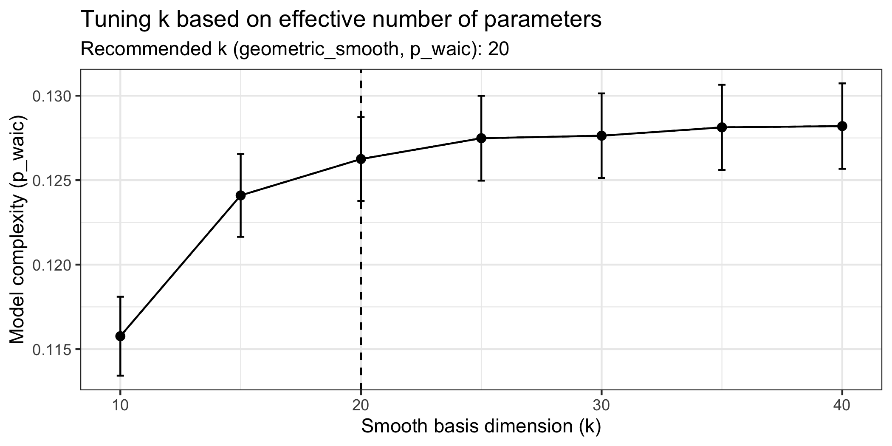

Modelling time-resolved electrophysiological data with Bayesian generalised additive multilevel models
The goal of neurogam is to provide utilities for estimating the onset and offset of time-resolved effects, such as those found in M/EEG, pupillometry, or finger/mouse-tracking data (amongst others). The current version only allows fitting 1D temporal data (e.g., raw M/EEG data or decoding timecourses, pupillometry) but will be extended in the near future to support 2D temporal and 3D spatiotemporal data.
Installation
You can install the development version of neurogam from GitHub with:
install.packages("remotes")
remotes::install_github(
repo = "https://github.com/lnalborczyk/neurogam",
dependencies = TRUE
)Usage
Model fitting
Below we fit a Bayesian generalised additive multilevel model (BGAMM) with varying intercept, slope, and smooth (per participant) to estimate the onset and offset of a difference between conditions. Note that we recommend fitting the BGAMM on time-resolved summary statistics (mean and SD) as the full (i.e., trial-by-trial) BGAMM may be too slow, and the group-level BGAM (i.e., no random/varying effect) may provide anticonservative cluster estimates.
# loading the neurogam package
library(neurogam)
# importing some simulated EEG data
data(eeg_data)
# displaying some rows
head(eeg_data)
#> participant condition trial time eeg
#> 1 participant_01 cond1 1 0.000 0.8618045
#> 2 participant_01 cond1 1 0.002 1.2729148
#> 3 participant_01 cond1 1 0.004 1.6538158
#> 4 participant_01 cond1 1 0.006 1.3910888
#> 5 participant_01 cond1 1 0.008 0.6499553
#> 6 participant_01 cond1 1 0.010 0.1548358
# fitting the BGAMM to identify clusters (around 10 minutes on a recent laptop)
results <- testing_through_time(
# simulated EEG data
data = eeg_data,
# name of predictor in data
# predictor_id = "condition",
# when predictor_id = NA, tests average level against 0
predictor_id = NA,
# we recommend fitting the GAMM with summary statistics (mean and SD)
multilevel = "summary",
# threshold on posterior odds
threshold = 10,
# number of iterations (per MCMC)
iter = 5000
)Visualising the results
# displaying the identified clusters
print(results)
#>
#> ==== Time-resolved GAMM results ===============================
#>
#> Clusters found:
#>
#> sign id onset offset duration
#> positive 1 0.162 0.348 0.186
#>
#> =================================================================
# plotting the data, model's predictions, and clusters
plot(results)
Posterior predictive checks
We recommend visually assessing the predictions of the model against the observed data. We provide a lightweight ppc() method, but you can conduct various PPCs with brms::pp_check(results$model, ...) (for all available PPCs, see https://mc-stan.org/bayesplot/reference/PPC-overview.html).
# posterior predictive checks (PPCs)
ppc(object = results, ppc_type = "participant")
How to define the basis dimension?
We cannot provide a single universal recommendation for choosing the optimal value of \(k\), as it depends on several factors, including the sampling rate, preprocessing steps (e.g., signal-to-noise ratio, low-pass filtering), and the underlying temporal dynamics of the effect of interest. One strategy is to set \(k\) as high as computational constraints allow (acknowledging that the \(k\)-value only provides an upper bound on the effective basis dimension). Alternatively, one can fit a series of models with different \(k\) values and compare these models using information criteria such as LOOIC or WAIC, alongside with posterior predictive checks (PPCs), to select the model that best captures the structure of the data. We illustrate this approach below.
# recommend an optimal smooth basis dimension k
k_res <- recommend_k(
object = results,
k_min = 10,
k_max = 40,
k_step = 5,
criterion = "waic"
)
# results summary
summary(k_res)
#>
#> ==== Summary of k recommendation ===================================
#>
#> Number of models fitted : 7
#> k values tested : 10, 15, 20, 25, 30, 35, 40
#> Range of k values : [10, 40]
#> Knee based on : p_waic
#> Recommended k (knee) : 15
#>
#> Comparison table (rounded):
#>
#> k model waic_elpd waic_elpd_se p_waic p_waic_se waic p_waic_smooth
#> 10 gam_k10 -4703.617 5.394 0.145 0.003 9407.234 0.145
#> 15 gam_k15 -4703.966 5.395 0.155 0.003 9407.932 0.155
#> 20 gam_k20 -4704.013 5.395 0.156 0.003 9408.026 0.156
#> 30 gam_k30 -4704.064 5.395 0.156 0.003 9408.128 0.156
#> 25 gam_k25 -4704.094 5.395 0.157 0.003 9408.189 0.157
#> 35 gam_k35 -4704.104 5.395 0.157 0.003 9408.207 0.157
#> 40 gam_k40 -4704.159 5.395 0.159 0.003 9408.319 0.159
#>
#> ====================================================================Polyglot use of neurogam
To use neurogam functions in Python (e.g., on MNE epochs), we recommend using the rpy2 interface (https://github.com/rpy2/rpy2), as shown below. It simply requires reshaping MNE epochs into long format (one trial/observation per row) (see for instance epochs.to_data_frame(long_format=True), https://mne.tools/stable/generated/mne.Epochs.html#mne.Epochs.to_data_frame).
# loading the Python modules
import rpy2.robjects as robjects
from rpy2.robjects.packages import importr
from rpy2.robjects.conversion import localconverter
# importing the "neurogam" R package
neurogam = importr("neurogam")
# reshaping epochs into long format
# long_df = epochs.to_data_frame(long_format=True)
# assuming long_df is some M/EEG data reshaped in long format
with localconverter(robjects.default_converter + pandas2ri.converter):
long_df_r = robjects.conversion.py2rpy(long_df)
# using the testing_through_time() function from the neurogam package
results = neurogam.testing_through_time(data=long_df_r, threshold=10)To use neurogam functions in Julia, we recommend using the RCall package (https://juliainterop.github.io/RCall.jl/stable/) (thanks to Benedikt Ehinger for sharing this code snippet).
Citation
When using neurogam, please cite the following publication:
- Nalborczyk, L., & Bürkner, P. (2025). Precise temporal localisation of M/EEG effects with Bayesian generalised additive multilevel models. biorXiv. Preprint available at: https://doi.org/10.1101/2025.08.29.672336.
As neurogam is an interface to the brms package, please additionally cite one or more of the following publications:
- Bürkner P. C. (2017). brms: An R Package for Bayesian Multilevel Models using Stan. Journal of Statistical Software. 80(1), 1-28. doi.org/10.18637/jss.v080.i01
- Bürkner P. C. (2018). Advanced Bayesian Multilevel Modeling with the R Package brms. The R Journal. 10(1), 395-411. doi.org/10.32614/RJ-2018-017
- Bürkner P. C. (2021). Bayesian Item Response Modeling in R with brms and Stan. Journal of Statistical Software, 100(5), 1-54. doi.org/10.18637/jss.v100.i05
Getting help
If you encounter a bug or have a question please file an issue with a minimal reproducible example on GitHub.